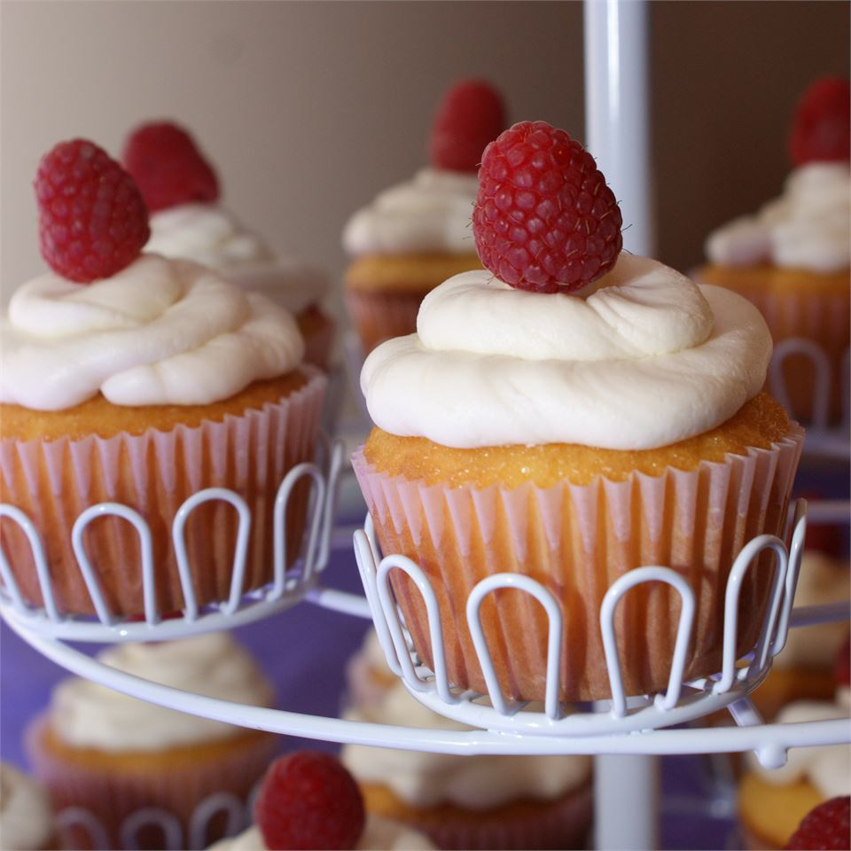

Raspberry White Chocolate Buttercream Cupcakes Recipe

Description
A sweet bite size raspberry treat! Wonderful for birthdays or a tea party!
Ingredients
- 1 (18.25 ounce) package vanilla cake mix
- 1 cup water
- 1/3 cup vegetable oil
- 3 eggs
- 8 ounces fresh raspberries
- 1 tablespoon water
- 3 tablespoons white sugar
- 1 tablespoon cornstarch
- 1/4 cup water
- 2 cups white chocolate chips
- 1 cup butter
- 5 cups confectioners' sugar
- 2 tablespoons milk, or as needed
Steps
- Preheat the oven to 350 degrees F (175 degrees C).
- Grease 24 muffin cups or line with paper liners.
- Mix together vanilla cake mix, 1 cup water, vegetable oil, and eggs in a mixing bowl with an electric mixer on
low speed until cake mix is moist. Raise mixer speed to medium and beat until batter is smooth, 2 minutes.
-
Spoon batter into prepared muffin cups, filling them about 2/3 full.
-
Bake in the preheated oven until cupcakes are very lightly browned and a toothpick inserted into the center
of a cupcake comes out clean, 18 to 23 minutes.
-
Cool cupcakes in the pans for 5 minutes; transfer cupcakes to cooling rack to finish cooling.
-
Place raspberries, 1 tablespoon water, and white sugar in a blender and pulse several times to chop raspberries;
blend until pureed, about 30 seconds.
- Whisk cornstarch with 1/4 cup water until thoroughly combined; pour into the raspberry mixture in the blender and
blend again until smooth.
- Pour raspberry mixture into a saucepan and simmer over low heat until thickened, about 5 minutes. Let the raspberry
filling cool.
- Cut a core out of each cupcake about 1 1/2 inches long and 1 inch in diameter.
- Spoon about 2 teaspoons raspberry filling into each cupcake.
- Place white chocolate chips in a microwave-safe bowl and heat in 30-second intervals until chips begin
to melt, about 1 minute. Stir and repeat, heating chips about 10 seconds at a time, until thoroughly
melted. Stir until chocolate is smooth and no more lumps remain.
- Beat butter with an electric mixer on medium speed in a mixing bowl until fluffy. Beat in half the
confectioners' sugar, melted white chocolate chips, and milk until mixture is smooth and creamy.
- Slowly beat in remaining confectioners' sugar until smooth; if frosting is too stiff, beat in more milk,
1 teaspoon at a time.
- Spread or pipe the white chocolate frosting over the cupcakes to cover the raspberry filling; drizzle or
pipe any remaining raspberry filling over the cupcakes.
Return Home